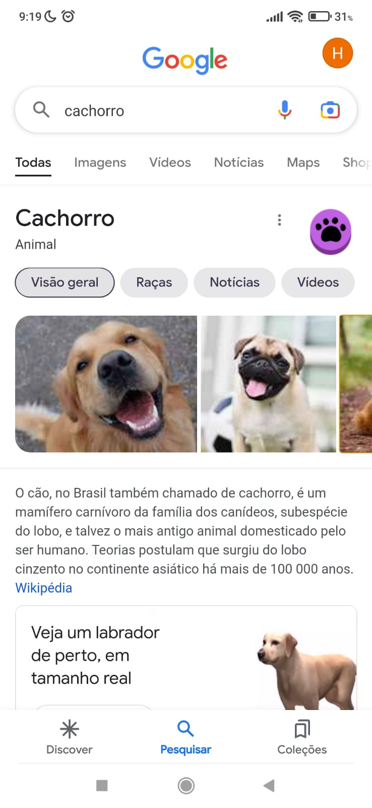
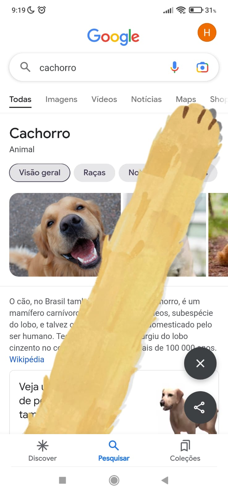

Você sabia que se pesquisar cachorro no Google de telefone, e apertar uma patinha que aparece, você vê patas de vários doguinhos?


CURIOSIDADES SOBRE CÃES!!!!
CURIOSIDADE #1: O olfato deles é brabo. "Enquanto nós, humanos, respiramos e cheiramos pelo mesmo caminho, os cachorros possuem um canal apenas para o olfato apurado. Quando um cão inspira, parte do ar segue a rota até os pulmões.
Porém, parte do ar segue um caminho diferente, dedicado exclusivamente aos cheiros. Ali, ele consegue decifrar os códigos presentes no ar, de forma muito mais eficiente que a nossa."
Clique aqui para mais curiosidades do olfato dos cães
CURIOSIDADE #2: Sabia que os cachorros são carentes? Eles finjem estar doentes, para chamar a atenção de seus donos!
CURIOSIDADE #3: Quantos anos seu cachorro tem? E na idade dele, quantos anos ele tem? "2 anos de um cachorro de pequeno, médio e grande porte equivalem, respectivamente, a 25, 21 e 18 anos de um humano."
Clique aqui
para mais curiosidades!!